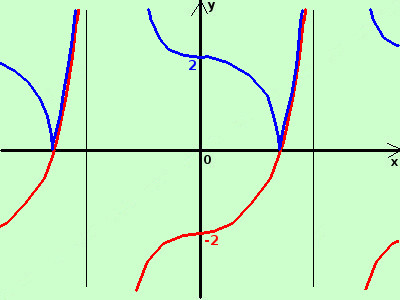

|
sviluppo Data la seguente funzione costruitene approssimativamente il grafico y = |tangx - 2|  considero la funzione senza modulo y = tangx - 2 e' la funzione tangente abbassata di due unita' in verticale E' piuttosto complicato trovare le intersezioni con l'asse delle x (dovrei risolvere l'equazione tangx=2); quindi procediamo senza definirle Ha il flesso nei punti (0±kπ; -2) Disegno la curva (in rosso) ruotando attorno all'asse x perpendicolarmente al piano cartesiano ribalto la parte sotto l'asse x sopra l'asse stesso in blu il risultato finale |